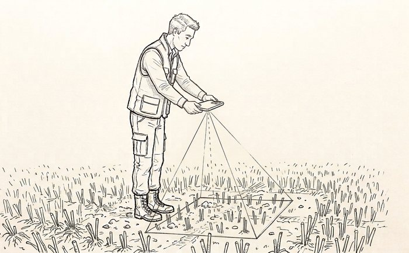
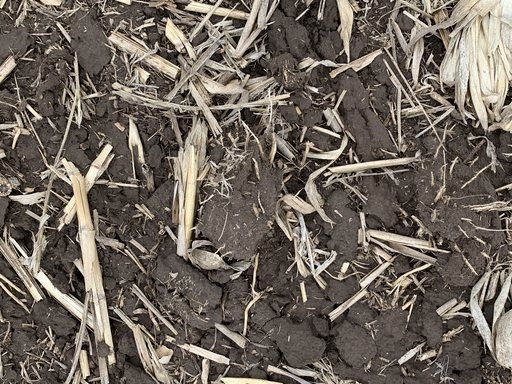
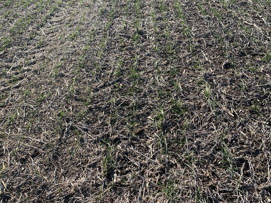

Drop your downward-facing field photos here
— or use Load images on the right to begin.
| # | Original | Mask | Residue % | Canopy % | Soil % | Filename | Timestamp | Lat | Lon |
|---|
Stover version: 1.0.0
Stover classifies the fraction of ground covered by crop residue, green canopy, and bare soil from downward-facing images. It uses a U-Net convolutional neural network trained from scratch on a large, manually segmented dataset of in-situ field images. The model runs entirely in your browser.
Patrignani, A., et al. Pixel-level classification of crop residue, green canopy, and bare soil cover from in-situ RGB images using a U-Net. Agronomy Journal (in review).
Andres Patrignani — Department of Agronomy — Kansas State University
For questions, bug reports, feature requests, or potential collaborations, please reach out at:
andrespatrignani@ksu.edu
This is a client-side web app: your images are processed entirely on your own device by a neural network running in your browser. Nothing is uploaded anywhere.
Stover reads residue, canopy, and soil from a straight-down photo of about one square meter of ground. A few habits when you shoot make the classification far more reliable.
Bend forward slightly from the hips and hold the camera at about waist height, lens pointing straight down at the ground. Don't go too high, otherwise the frame covers too much ground and residue becomes too small to resolve.

Keep the lens parallel to the ground for a true top-down (nadir) view. A tilted, oblique angle distorts the cover fractions and stretches residue toward the far edge of the frame.


Frame only the soil surface. Shoes, hands, flags, tools, or soil probes get misread and skew the numbers. Your own boots are the most common intruder.
Shoot mid-day with good illumination or under overcast skies. Avoid the long shadows of early morning or late evening, and stand so your own shadow doesn't fall across the frame.
One more thing: Stover can't see residue hidden under a standing crop canopy.
New to Stover? See Collecting images in the Help menu for how to take photos the model reads well.
Each image is resized to 512 × 512 pixels and passed through a U-Net that assigns every pixel to one of three classes — crop residue, green canopy, or bare soil. The reported cover percentages are the fraction of pixels in each class. Classification runs at 512 × 512 regardless of the input image size, so very large photos and small phone photos are treated consistently. The first classification after the app loads may take a moment while the model initializes; subsequent images are faster.
Load Images
Press to select one or more images in PNG, JPG, or JPEG format. Multiple files can be selected at once. You can also drag and drop image files directly onto the image pane on the left. The label directly below shows the number of images loaded, and the line under it shows the model status.
Cover readout (Residue / Canopy / Soil)
Shows the percentage of the current image classified as crop residue, green canopy, and bare soil. The three values sum to 100%.
Inspect images (Previous / Next)
Navigate through the loaded image list. The counter shows your position, and Previous / Next wrap around at the ends.
Image information
Shows the current image's metadata: file name, capture timestamp, GPS coordinates, capture device, and the original image dimensions followed by the megapixel count in parentheses. Timestamp and GPS fields are read from the EXIF metadata embedded in the file and may show "N/A" for processed or PNG-format images that have lost their original EXIF.
Overlay
"Class colors" paints each pixel with its predicted class — yellow for residue, green for canopy, and maroon for soil, matching the color scheme used in the associated publication. "Original" shows the source photo unchanged, which is useful for comparing the raw image against the classification using the opacity slider. "Uncertainty" shades each pixel by how confident the model is in its prediction — brighter areas mark lower-confidence pixels, which usually fall along residue and leaf edges, so you can see where the classification is least sure. The uncertainty map can also be saved for each image under Select outputs.
Overlay opacity
Controls how the classification mask is blended onto the displayed image. A value of 0 shows only the original photo; 100 shows only the mask. Intermediate values are useful for visually verifying that the classification followed leaf and residue edges correctly.
Select outputs (Table / Blended / Class masks)
Selects which files the batch will produce. "Table" writes a CSV with one row per image containing the filename, the residue / canopy / soil cover percentages, GPS coordinates, timestamp, device, and original image dimensions. "Blended" writes a JPEG per image showing the source photo overlaid with the classification mask at the current opacity. "Class masks" writes a PNG per image with the three-color class map. Blended and Class-mask outputs are packaged together into a single ZIP archive. At least one option must be selected.
Process batch
Runs the U-Net on every loaded image and downloads the selected outputs through your browser. The progress bar tracks completion. Processing time depends on the number of images and your device; each image is classified at 512 × 512.
The image shown in the main window is a preview capped at about 800 pixels on the longest side, with the classification mask overlaid. Classification is always computed at 512 × 512, and the reported cover percentages come from that resolution. Class-mask PNGs are saved at 512 × 512; blended JPEGs are saved at the preview resolution.
Everything — image decoding, neural-network inference, and file packaging — runs locally on your device using onnxruntime-web. No images are ever uploaded anywhere. Because it's a Progressive Web App, you can install it (see "Install App" in the menu bar, where supported) for an offline, app-like experience. The model file is roughly 70 MB and is cached on first load.
Stover
Copyright (c) 2026 Patrignani
Required Notice: Copyright 2026 Patrignani
Licensed under the PolyForm Noncommercial License 1.0.0.
The full text of the license follows below.
------------------------------------------------------------------
PolyForm Noncommercial License 1.0.0
<https://polyformproject.org/licenses/noncommercial/1.0.0>
# Acceptance
In order to get any license under these terms, you must agree
to them as both strict obligations and conditions to all
your licenses.
# Copyright License
The licensor grants you a copyright license for the
software to do everything you might do with the software
that would otherwise infringe the licensor's copyright
in it for any permitted purpose. However, you may
only distribute the software according to [Distribution
License](#distribution-license) and make changes or new works
based on the software according to [Changes and New Works
License](#changes-and-new-works-license).
# Distribution License
The licensor grants you an additional copyright license
to distribute copies of the software. Your license
to distribute covers distributing the software with
changes and new works permitted by [Changes and New Works
License](#changes-and-new-works-license).
# Notices
You must ensure that anyone who gets a copy of any part of
the software from you also gets a copy of these terms or the
URL for them above, as well as copies of any plain-text lines
beginning with `Required Notice:` that the licensor provided
with the software. For example:
> Required Notice: Copyright Yoyodyne, Inc. (http://example.com)
# Changes and New Works License
The licensor grants you an additional copyright license to
make changes and new works based on the software for any
permitted purpose.
# Patent License
The licensor grants you a patent license for the software that
covers patent claims the licensor can license, or becomes able
to license, that you would infringe by using the software.
# Noncommercial Purposes
Any noncommercial purpose is a permitted purpose.
# Personal Uses
Personal use for research, experiment, and testing for
the benefit of public knowledge, personal study, private
entertainment, hobby projects, amateur pursuits, or religious
observance, without any anticipated commercial application,
is use for a permitted purpose.
# Noncommercial Organizations
Use by any charitable organization, educational institution,
public research organization, public safety or health
organization, environmental protection organization,
or government institution is use for a permitted purpose
regardless of the source of funding or obligations resulting
from the funding.
# Fair Use
You may have "fair use" rights for the software under the
law. These terms do not limit them.
# No Other Rights
These terms do not allow you to sublicense or transfer any of
your licenses to anyone else, or prevent the licensor from
granting licenses to anyone else. These terms do not imply
any other licenses.
# Patent Defense
If you make any written claim that the software infringes or
contributes to infringement of any patent, your patent license
for the software granted under these terms ends immediately. If
your company makes such a claim, your patent license ends
immediately for work on behalf of your company.
# Violations
The first time you are notified in writing that you have
violated any of these terms, or done anything with the software
not covered by your licenses, your licenses can nonetheless
continue if you come into full compliance with these terms,
and take practical steps to correct past violations, within
32 days of receiving notice. Otherwise, all your licenses
end immediately.
# No Liability
***As far as the law allows, the software comes as is, without
any warranty or condition, and the licensor will not be liable
to you for any damages arising out of these terms or the use
or nature of the software, under any kind of legal claim.***
# Definitions
The **licensor** is the individual or entity offering these
terms, and the **software** is the software the licensor makes
available under these terms.
**You** refers to the individual or entity agreeing to these
terms.
**Your company** is any legal entity, sole proprietorship,
or other kind of organization that you work for, plus all
organizations that have control over, are under the control of,
or are under common control with that organization. **Control**
means ownership of substantially all the assets of an entity,
or the power to direct its management and policies by vote,
contract, or otherwise. Control can be direct or indirect.
**Your licenses** are all the licenses granted to you for the
software under these terms.
**Use** means anything you do with the software requiring one
of your licenses.
Your browser supports GPU acceleration, but it couldn't access the GPU on this computer — so classification is running on the CPU. It still works and gives identical results, just slower (a few seconds per image instead of a fraction of a second).
1. Turn on hardware acceleration. In Chrome or Edge: Settings → System → “Use graphics acceleration when available”, then relaunch the browser.
2. Update your graphics driver and browser. GPU acceleration is disabled on some older graphics drivers; updating the driver and using the latest Chrome or Edge usually fixes it.
3. Try a different browser. Recent versions of Chrome and Microsoft Edge use the GPU out of the box on most computers.
Note: if you are connecting through Remote Desktop, the GPU is usually unavailable — run the app directly on the computer instead.